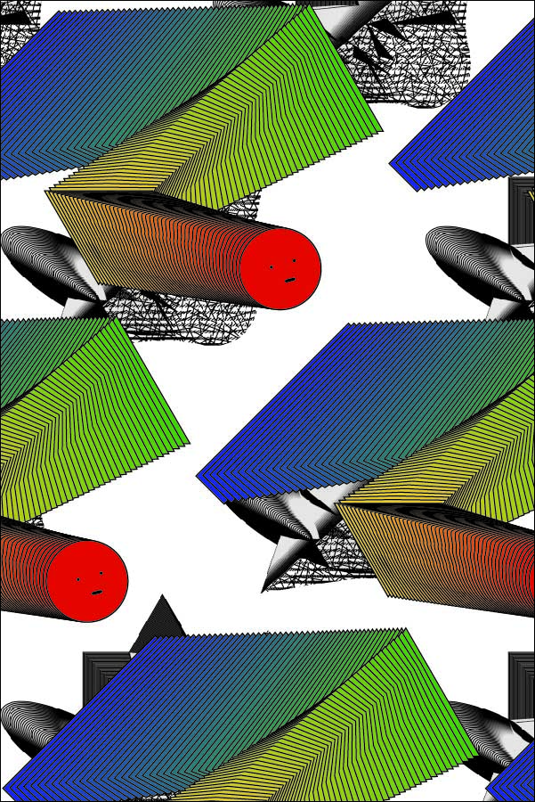
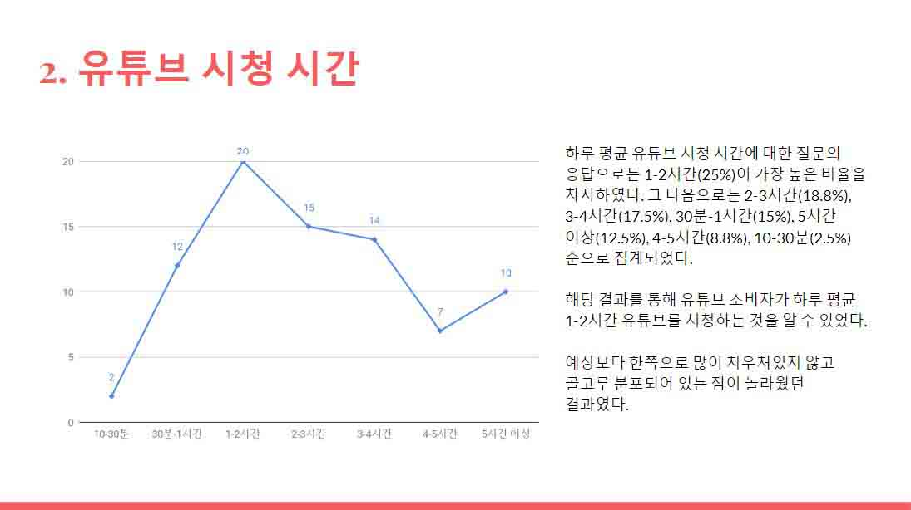
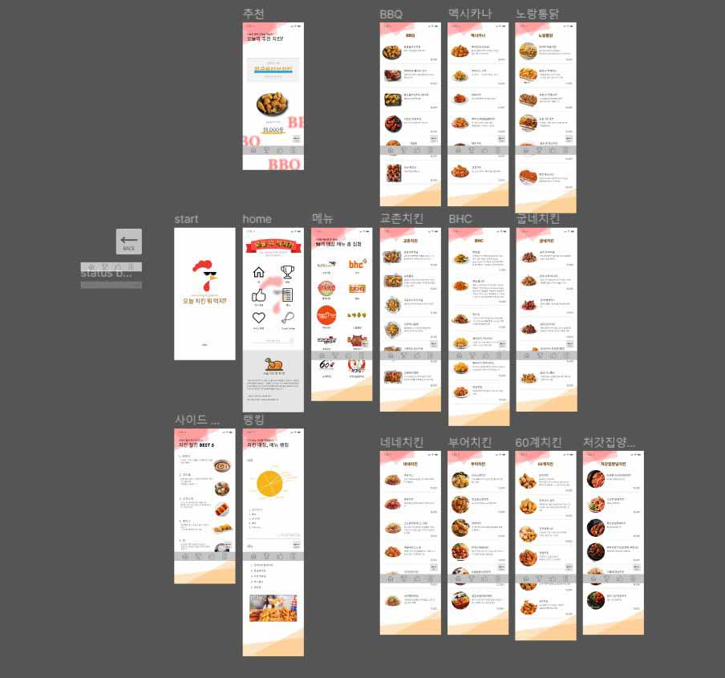

About
Digital media content
Digital Humanities Art
Photo
Contact
Digital Humanities Art
디지털인문예술
1-1 디지털매체와예술
기하학적드로잉
일러스트레이터

패턴드로잉
일러스트레이터
명함디자인_1
일러스트레이터
앨범커버디자인
일러스트레이터
브이로그
프리미어프로
2-1 디지털인문예술입문
영화 기생충 사이트
구글사이트

유튜브 소비현황에 대한 연구
구글 설문지/프리젠테이션
유튜브 소비현황에 대한 연구
구글 설문지/프리젠테이션

"치킨 뭐 먹지?" 어플
Figma